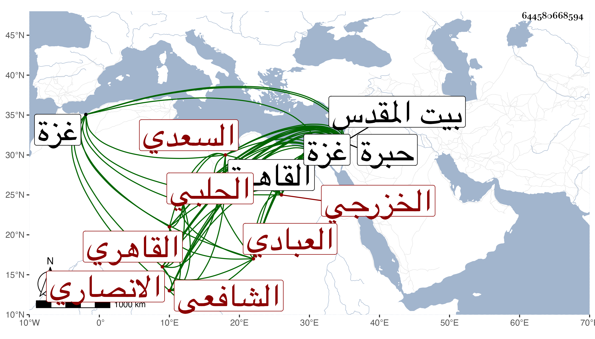

0902Sakhawi.DawLamic.ITO20230111-ara1.EIS1600.644580668594
Biography ID: 644580668594
278
عبد الرحمن بن علي بن أحمد بن عثمان الزين أبو هريرة بن العلاء أبي الحسن السعدي العبادي الانصاري الخزرجي الحلبي الأصل القاهري الشافعي الأصم سبط أبي امامة بن النقاش . ولد في سنة أربع وثمانين وسبعمائة بالقاهرة ونشأ بها فحفظ القرآن وتلا به لأبي عمر وعلى بعض القراء وحفظ أحكام الأحكام لجده لأمه والنخبة لشيخنا وألفية الحديث والنحو وغالب التنبيه وأخذ الفقه واصوله والنحو عن الشمس الشطنوفي والفرائض عن الشمس الغراقي وعلم الحديث عن خاله أبي هريرة وشيخنا وبرع في ذلك كله سيما النحو والفرائض وأجاز له السراج البلقيني والزين العراقي ، وحج وزار بيت المقدس والخليل ودخل غزة ولكنه لم يسمع بها شيئا وولي الخطابة بجامع أصلم ، ومرض بعد بلوغه فحصل له صمم بحيث انه لم يكن يسمع شيئا البتة بل كان من أراد تحديثه يحرك له باصبعه على كمه أو على كفه من داخل كمه بحيث لا يرى أو على ظهره بملامسة الأصبع لجسده كل ذلك كهيئة من يكتب فيفهم به مراده ويقال ان الشطنوفي كان يقرر له الدروس بأصبعه كتابة في الهواء ورأيت شيخنا كثيرا يقرر له كذلك ويفهمه سريعا بدون تكلف ويستشكل ويرد وهو في ذلك من أعاجيب الدهر أشار شيخنا لذلك في وفيات سنة ست عشرة فترجم محمد بن إبراهيم بن عبد الحميد بن علي الموغاني بمثل ذلك كما سيأتي ثم قال وقد حاكاه فيه صاحبنا وسمى هذا وهو مع ذلك في غاية الذكاء واللطافة والتنكيت وحلاوة النادرة وسرعة الجواب وممن يعرف الدقاف ورمى النشاب معرفة مليحة ، ولما مات شيخنا أنشدني لنفسه فيه مرثية أودعتها الجواهر والدرر . ومات في ربيع الآخر سنة خمس وخمسين ، وبلغني انه قبل موته بيسير في حال مرضه خف صممه حتى قضى المخبر لي وهو من أقربائه من ذلك العجب رحمه الله وايانا ، ومما كتبته عنه من نظمه :
| أقسمت لا أسال الا حرا | لا تسأل النذل يزدك ضرا |
| إن الكمال لكل امرئ | لمن لأبوابه استقرا |
كذا من نظمه :
| جردت روح الروح مني سائلا | هل من جواب صالح عن صالح |
| فأجابني بعد التأوه قائلا | ما سن في الاسلام سنة صالح |
